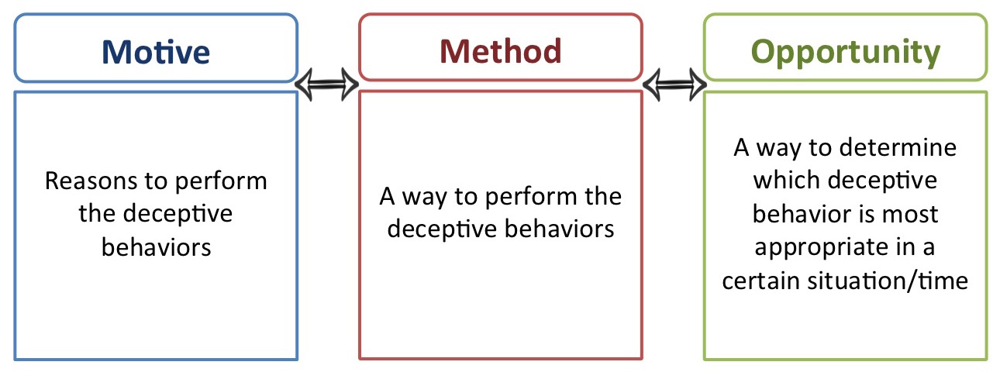
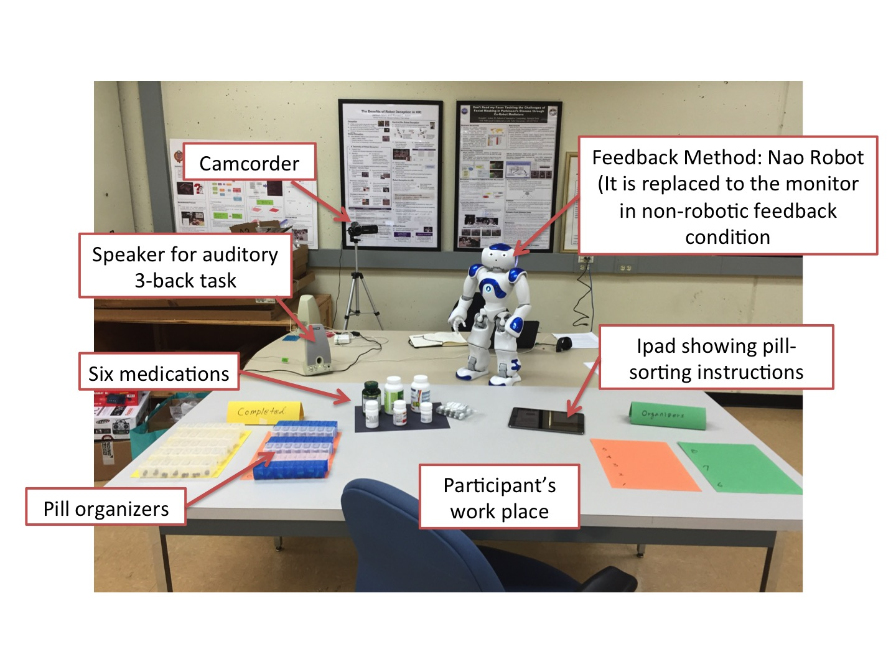

Robot Deception
Other-oriented Robot Deception

As social agents, people commonly lie to others and perform deceptive behaviors more than they realize. In human interaction, deception is ubiquitous and occurs frequently during people’s development and in personal relationships, sports, culture, and even war. Then, are humans the only beings to have deception capabilities? No, deception is not limited to human beings. Various biological research findings illustrate that animals act deceptively in several ways to enhance their chance of survival. One article finds that even some plants show deception for the purpose of survival. From these findings, we can argue that deception is a general and essential behavior for any species, which raises an interesting question: can deception be an essential characteristic for robots, especially social robots?
Throughout the work in my dissertation, I aim to investigate and explore deception in social robots. In other words, I aim to figure out whether and how a robot decides and performs deception in general social situations. Even though we can discuss the potential benefits of robot deception, it is obvious that robot deception has to be considered carefully in regards to social robots. One strong argument that I will illustrate throughout this research is that robot deception should be used only in appropriate human-robot interaction (HRI) contexts. I will discuss the motivation of robot deception later, but briefly, a chief motive for social robots to perform deception should be to benefit the deceived human beings. According to DePaulo, human deception can be categorized based on motivation, such as self-oriented and other-oriented deception. In general, people act deceptively for their (deceiver’s) own benefit. This is self-oriented deception. However, people also sometimes deceive another person for that person’s (the deceived’s) benefit. For example, people may tell a white lie such as “you look great today!” just to make the deceived person feel good. This type of deception is defined as other-oriented deception, which is motivated by the deceived person’s potential benefits. Similar to this approch, I classify robot deception (also define the taxonomy of robot deception) and define other-oriented robot deception. Also, I aim to achieve this other-oriented robot deception in HRI.
To argue a robot's other-oriented deception, I developed a computational model for robot deception inspired by criminological law. According to this approach, deception can be analyzed by three criteria: methods, motives, and opportunities. Methods indicate the way to perform deception, where a novel algorithm for generating deceptive actions is developed. Motives indicate whether the current situation warrants the use of other-oriented deception. If so, the robot should determine specifically when the deceptive actions should be performed given an Opportunity. First, the deceptive action generation model for the method part is developed inspired by Bell and Whaley's deception mechanisms in psychology: deception by omission and deception by commission. In opportunities and motives parts, an appropriate action should be selected from a set of true/deceptive actions for a given situation. The model should store the information of situation-action pairs that increases/decreases the deceived human's benefits. For this purpose, a computational model is developed via Case-based Reasoning mechanism.
After, by conducting HRI study, I explored the real usecases of other-oriented robot deception. It is essential to determine whether the specific context warrants the use of other-oriented deception. Once we can identify the use of deception that can help the deceived human in a certain situation, a robot establishes the motive(s) for other-oriented deception, and subsequently may perform deceptive behaviors. In the HRI study, we explore the potential context in which the motives of otheroriented deception can be revealed. To demonstrate the benefit of other-oriented robot deception, we conduct a formal HRI study and identify its advantages.
Publications
- Jaeeun Shim.and Ronald C. Arkin, 2016. "Other-oriented Robot Deception: How can a robot’s deceptive feedback help humans in HRI?", Eighth International Conference on Social Robotics (ICSR 2016), Kansas, Mo., Nov. 2016. [pdf]
- Jaeeun Shim and Ronald C. Arkin, "The Benefits of Robot Deception in Search and Rescue: Computational Approach for Deceptive Action Selection via Case-based Reasoning," 2015 IEEE International Symposium on Safety, Security, and Rescue Robotics (SSRR 2015), West Lafayette, IN, Oct. 2015. [pdf]
- Jaeeun Shim and Ronald C. Arkin. "Other-Oriented Robot Deception: A Computational Approach for Deceptive Action Generation to Benefit the Mark," 2014 IEEE International Conference on Robotics and Biomimetics (ROBIO 2014), Bali, Indonesia, Dec. 2014. [pdf]
- Jaeeun Shim and Ronald C. Arkin. "A Taxonomy of Robot Deception and its Benefits in HRI," Proc. IEEE Systems, Man, and Cybernetics Conference (SMC), Manchester, England, 2013. [pdf]